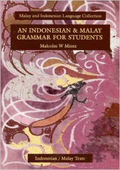

Nominal Predicate Constructions
in Indonesian
David Moeljadi
* Slides can be accessed at
davidmoeljadi.github.io/ISMIL19
See the slides with your laptop, smartphones, tablets etc.
Nominal Predicate Constructions
in Indonesian
The Nineteenth International Symposium On Malay/Indonesian Linguistics (ISMIL 19)
Jambi, Indonesia, 13 June 2015
David Moeljadi
Nanyang Technological University, Singapore
* Slides can be accessed at davidmoeljadi.github.io/ISMIL19
Outline
- Nominal predicate constructions
- Copulas in Indonesian
- Nanyang Technological University Multilingual Corpus (NTU-MC)
- Syntactic features of copulas in Indonesian
- Relational meanings
- Summary
Nominal predicate
constructions
- clauses in which the semantic content of the predication is embodied in a noun (Payne 2008: 111)
- copula clauses with copula verbs (Dixon 2009: 159)
Copula verb
- Must be able to occur in a construction with two core arguments: copula subject (CS) and copula complement (CC)
(Dixon 2009: 159-161, 185)
Copula verb
- Has relational meaning:

- Covering at least Identity relation and/or Attribution relation
(Dixon 2009: 159-161, 185)
Copula verb
- Some languages lack a copula verb. The copula slot is left blank and we have 'verbless clauses'.
- Some languages have more than one copula verb. Most commonly, one will just refer to a state and the other to coming into a state, similar to be and become in English
- become often shows more verbal categories than does be. become often has some of the characteristics of a regular verb while still functioning as a copula
(Dixon 2009: 175)
Outline of the semantic relations in copula constructions for Indonesian
| Relation | CS | Copula | CC |
|---|---|---|---|
| Identity Possession |
Dahlan | ∅ adalah ialah merupakan menjadi bukan |
pemain utama dalam tim nasional |
| Attribution | Pernyataan itu | ∅ adalah menjadi tidak |
benar |
Outline of the semantic relations in copula constructions for Indonesian
| Relation | CS | Copula | CC | |
|---|---|---|---|---|
| Benefaction | Perjuangan ini | ∅ adalah ialah tidak |
demi negara | |
| Location | Pohonnya | tidak | ∅ ada berada |
di taman ini |
Copulas in Indonesian
Data from Sneddon et al. (2010), Alwi et al. (2014), Macdonald (1976), Mintz (2002), and Arka (2013)
Indonesian reference grammars
 |
 |
 |
 |
| Sneddon et al. 2010 | Alwi et al. 2014 | Macdonald 1976 | Mintz 2002 |
and Arka 2013
Zero copula, adalah and ialah
- Indonesian, like other Austronesian languages, has no obligatory copula verb for nonverbal predication (Arka 2013)
- Zero copula and adalah are associated with stative situation and non-future or present tense (Arka 2013)
- adalah and ialah are interchangable (Sneddon et al. 2010, Alwi et al. 2014, Mintz 2002)
- ialah only occurs after 3rd person subjects (Sneddon et al. 2010, Mintz 2002)
Zero copula, adalah and ialah
- adalah and ialah are most common in noun clauses where either the subject or predicate is long or structurally complex (Sneddon et al. 2010, Alwi et al. 2014, Macdonald 1976)
- adalah and ialah are common in noun clauses where the predicate is a nominalised verb, bahwa clause or untuk clause (Sneddon et al. 2010)
- adalah and ialah appear in formal, written language (Macdonald 1976). The function is to replace the emphasis in spoken language through stress and juncture (Mintz 2002)
merupakan and menjadi
- merupakan 'be, constitute' and menjadi 'be, become', are sometimes referred to as copulas; however, they are full verbs and can be negated (Sneddon et al. 2010)
- In everyday Indonesian, adalah can be changed with merupakan (Alwi et al. 2014)
- merupakan, which means literally 'to form' or 'to be in the form of', can also express the concept of 'to be' (Mintz 2002)
- The verb menjadi is copulative, occurs with either a nominal construct or an adjective as dependency (Macdonald 1976)
merupakan and menjadi
- menjadi which means 'to be' or 'to become' can follow yang (Mintz 2002)
- An inchoative copular verb menjadi 'become' is associated with dynamic event and obligatory for future tense (Arka 2013)
- The auxiliary akan and telah can take menjadi but not adalah (Arka 2013)
- Control constructions obligatorily requires an inchoative verb (men)jadi (Arka 2013)
Copula? or not copula?
| ∅ | adalah | ialah | merupakan | menjadi | |
|---|---|---|---|---|---|
| Sneddon et al. 2010 | ○ | ○ | ○ | ☓ | ☓ |
| Alwi et al. 2014 | ○ | ○ | ○ | ○ | ‒ |
| Macdonald 1976 | ○ | ○ | ○ | ‒ | ○ |
| Mintz 2002 | ○ | ○ | ○ | ? | ? |
| Arka 2013 | ○ | ○ | ‒ | ‒ | ○ |
Nanyang Technological University Multilingual Corpus (NTU-MC)
Nanyang Technological University Multilingual Corpus (NTU-MC)
- Parallel corpus, sense-tagged using Wordnet (lexical database)
- Indonesian text data contains 2,197 sentences from Singapore Tourism Board (STB) website
- English (source language) translated into Indonesian (target language)
- ongoing process of adding Sherlock Holmes short stories
(Tan & Bond, 2012; Bond et al., 2013)
Number of copulas in NTU-MC
| ∅ | adalah | ialah | merupakan | menjadi | TOTAL | |
|---|---|---|---|---|---|---|
| NTU-MC | 14 | 276 | 0 | 125 | 58 | 473 |
| ( 2.9%) | (58.4%) | ( 0.0%) | (26.4%) | (12.3%) | (100.0%) |
Compared with Wikipedia
(accessed at 00:47 on 13 June 2015)
| ∅ | adalah | ialah | merupakan | menjadi | |
|---|---|---|---|---|---|
| NTU-MC | 14 | 276 | 0 | 125 | 58 |
| Wikipedia | (not yet checked) | 346,263 | 9,578 | 195,994 | (not yet checked) |
Syntax
Syntactic features of Indonesian copulas
Syntactic features of Indonesian copulas
| ∅ | adalah | ialah | merupakan | menjadi | |
|---|---|---|---|---|---|
| passive | ☓ | ☓ | ☓ | *dirupakan | *dijadi |
| imperative | ☓ | ☓ | ☓ | *rupakanlah | jadilah |
| PROG sedang | ☓ | *sedang adalah | *sedang ialah | *sedang merupakan | sedang menjadi |
| PERF telah | ☓ | *telah adalah | *telah ialah | telah merupakan | telah menjadi |
| FUT akan | ☓ | *akan adalah | *akan ialah | akan merupakan | akan menjadi |
| modal bisa | ☓ | *bisa adalah | *bisa ialah | bisa merupakan | bisa menjadi |
Some examples
- Jadilah orang pertama yang memesan...
Be the first to order...(NTU-MC103227)
- ...Singapura sudah merupakan sebuah pos perdagangan...
...Singapore was already an up and coming trading post...
(NTU-MC101391)
- ...River Hong Bao telah menjadi pesta tahunan
Tahun Baru Imlek...
...the River Hong Bao has been an annual
Chinese New Year event...(NTU-MC103082)
- Resor terpadu Marina Bay Sands® akan menjadi
sebuah kota di dalam kota...
The Marina_Bay_Sands integrated resort is going to be
a city within a city...(NTU-MC102759)
Syntactic features of Indonesian copulas
| ∅ | adalah | ialah | merupakan | menjadi | |
|---|---|---|---|---|---|
| NEG tidak | *tidak | *tidak adalah | *tidak ialah | tidak merupakan | tidak menjadi |
| NEG bukan | bukan | *bukan adalah | *bukan ialah | bukan merupakan | *bukan menjadi |
| Control verb ingin | ☓ | *ingin adalah | *ingin ialah | *ingin merupakan | ingin menjadi |
| REL yang | ? | yang adalah | *yang ialah | yang merupakan | yang menjadi |
Some examples
- ...menyediakan tautan ini...tidak merupakan dukungan...
...providing these links...is not to be implied
as an endorsement...(NTU-MC100134)
- ...mulai memenuhi area yang dulunya ∅ jalan lumpur...
...started to line what used to be mud tracks...
(NTU-MC102901)
- ...Orchard Road yang merupakan kawasan perbelanjaan
utama di Singapura...
...Orchard_Road which is Singapore's main shopping
district...(NTU-MC100106)
- Mahakarya seni di Singapura memiliki begitu banyak
museum yang menjadi rumahnya.
Art masterpieces in Singapore have a plethora of
museums which they can call home.(NTU-MC101277)
Syntactic features of Indonesian copulas
| ∅ | adalah | ialah | merupakan | menjadi | ||
|---|---|---|---|---|---|---|
| CS | non-3rd | ○ | ○ | ☓ | ○ | ○ |
| CC | bahwa clause | bahwa | adalah bahwa | ialah bahwa | *merupakan bahwa | *menjadi bahwa |
| apakah clause | apakah | adalah apakah | ialah apakah | *merupakan apakah | *menjadi apakah |
Relational meanings
- Types of the Identity relation (Dixon 2009)
- Types of the Identity relation in Indonesian
Types of the Identity relation
Three referential possibilities for CS and CC:
- R: specific Referent
- proper name: Budi, Susi, ...
- demonstrative: ini, itu, ...
- pronoun: dia, mereka, ...
- D: specific Description
- description which specifies a particular person or thing
- G: General description
- description which does not have a unique referent
(Dixon 2009: 170-171)
Types of the Identity relation

(Dixon 2009: 171)
Zero copula
| CS | CC | |||
|---|---|---|---|---|
| R | D | Singapura mungkin satu-satunya tempat pacuan kuda di mana... | Singapore is perhaps the only major horse racing destination where...(NTU-MC104176) | 4/14 |
| R | G | Jika Anda seorang calon aktor... | If you are an aspiring thespian...(NTU-MC104066) | 4/14 |
| D | R | Di antaranya Limo Taxi... dan Limousine Cab... | Among them are Limo_Taxi... and Limousine_Cab...(NTU-MC103008) | 3/14 |
| D | D | Rekomendasi kami : singgahlah setelah lelah berbelanja... | Here's a recommendation – drop by after a day of shopping...(NTU-MC101659) | 2/14 |
Adalah
| CS | CC | |||
|---|---|---|---|---|
| R | G | Bila Anda adalah seorang pembelanja... | If you're an upmarket shopper...(NTU-MC100330) | 67/276 |
| R | D | Bahasa Mandarin adalah bahasa kedua... | The second most commonly-spoken language..., Mandarin...(NTU-MC100563) | 60/276 |
| D | D | Mi Hokkian goreng... di sini adalah versi keringnya... | The fried Hokkien noodles served here is the dry version...(NTU-MC102159) | 58/276 |
| D | R | Empat bahasa resmi... adalah bahasa Inggris,... | The four official languages... are English,...(NTU-MC100726) | 53/276 |
Adalah
| CS | CC | |||
|---|---|---|---|---|
| D | G | ...mata pencaharian utamanya adalah pertanian. | ...farming is the main form of livelihood.(NTU-MC102420) | 24/276 |
| R | R | Golden Mile Complex adalah Little Thailand... | Golden Mile_Complex is Singapore_'s_Little_Thailand...(NTU-MC102346) | 5/276 |
Adalah
| CS | CC | |||
|---|---|---|---|---|
| G | D | Sebuah tempat yang bagus... adalah di Kuil Lian... | A great place to observe... is at... Lin_Temple...(NTU-MC101966) | 5/276 |
| G | G | Olahraga adalah kegiatan waktu luang yang populer... | Sports is a popular past-time...(NTU-MC100988) | 4/276 |
Merupakan
| CS | CC | |||
|---|---|---|---|---|
| R | D | ...bahasa Inggris dan Mandarin yang merupakan bahasa paling umum digunakan dalam hidup sehari-hari. | ...English and Mandarin are the most commonly used languages in daily life.(NTU-MC100733) | 52/125 |
| R | G | ...Les Amis merupakan sebuah tempat bersantap yang sangat mewah... | ...Les_Amis is an undeniably luxurious... dining destination.(NTU-MC103798) | 31/125 |
| D | D | ...kuil ini merupakan kuil Buddha yang tertua... | ...it is Singapore's oldest Buddhist temple...(NTU-MC101967) | 25/125 |
Merupakan
| CS | CC | |||
|---|---|---|---|---|
| D | G | ...rumah makan... di sini merupakan sesuatu yang pantas... | ... food outlets... here are something worth...(NTU-MC100891) | 14/125 |
| G | D | Sepak bola jelas merupakan olah raga paling populer... | The beautiful game is undoubtedly Singapore's most popular sport.(NTU-MC102888) | 2/125 |
| G | G | Makanan juga merupakan bagian penting dari penawaran... | Food is also a big part of this mall...(NTU-MC100055) | 1/125 |
Menjadi
| CS | CC | |||
|---|---|---|---|---|
| R | D | Di tahun 1832, Singapura menjadi pusat pemerintahan... | In 1832, Singapore became the centre of government for...(NTU-MC101011) | 17/58 |
| R | G | ...Marina Bay Sands® akan menjadi sebuah kota di dalam kota... | The Marina_Bay_Sands... is going to be a city within a city...(NTU-MC103881) | 13/58 |
| D | G | ...kota ini menjadi suatu tempat pencampuran... | ...the city serves up a true melting pot...(NTU-MC101072) | 13/58 |
| D | D | ...kue-kue bulan yang baru dipanggang akan menjadi rajanya. | ...the freshly baked mooncakes here steal the show.(NTU-MC100584) | 8/58 |
Types of the Identity relation in Indonesian
| CS | CC | ∅ | adalah | ialah | merupakan | menjadi |
|---|---|---|---|---|---|---|
| R | R | 0 | 5 | ‒ | 0 | 0 |
| R | D | 4 | 60 | ‒ | 52 | 17 |
| R | G | 4 | 67 | ‒ | 31 | 13 |
| D | R | 3 | 53 | ‒ | 0 | 1 |
| D | D | 2 | 58 | ‒ | 25 | 8 |
| D | G | 1 | 24 | ‒ | 14 | 13 |
| G | D | 0 | 5 | ‒ | 2 | 4 |
| G | G | 0 | 4 | ‒ | 1 | 2 |
| 14 | 276 | ‒ | 125 | 58 |
Types of the Identity relation in Indonesian
| CS | CC | ∅ | adalah | ialah | merupakan | menjadi |
|---|---|---|---|---|---|---|
| R | R | 0.0% | 1.8% | ‒ | 0.0% | 0.0% |
| R | D | 28.6% | 21.7% | ‒ | 41.6% | 29.3% |
| R | G | 28.6% | 24.3% | ‒ | 24.8% | 22.4% |
| D | R | 21.4% | 19.2% | ‒ | 0.0% | 1.7% |
| D | D | 14.3% | 21.0% | ‒ | 20.0% | 13.8% |
| D | G | 7.1% | 8.7% | ‒ | 11.2% | 22.4% |
| G | D | 0.0% | 1.8% | ‒ | 1.6% | 6.9% |
| G | G | 0.0% | 1.4% | ‒ | 0.8% | 3.4% |
| 100.0% | 100.0% | ‒ | 100.0% | 100.0% |
Summary
Summary
- zero copula, adalah, ialah, merupakan, or menjadi can appear in nominal predicate constructions in Indonesian
- zero copula, adalah, and ialah are associated with stative situation and non-future (cf. Arka 2013)
- merupakan and menjadi are associated with dynamic event and future (cf. Arka 2013)
Zero copula, adalah and ialah
- zero copula, adalah, and ialah are negated with bukan
- zero copula, adalah, or ialah are used when the predicate is a clause (bahwa clause, apakah clause) (cf. Sneddon et al. 2010)
- ialah only occurs after 3rd person subjects (Sneddon et al. 2010, Mintz 2002)
- Both zero copula and adalah tend to be used for the following identity relations: R-D, R-G, D-R, and D-D (from NTU-MC)
Merupakan and menjadi
- PERF telah, FUT akan, and modals such as bisa can precede merupakan and menjadi (cf. Arka 2013)
- merupakan and menjadi are negated with tidak
- merupakan can be negated with bukan
- merupakan tends to be used for Identity relation R-D (from NTU-MC)
- merupakan cannot be used if the CC is a specific referent (R) (from NTU-MC)
Menjadi
- menjadi can be used in imperative: jadilah (from NTU-MC)
- PROG sedang can precede menjadi (from SEAlang)
- Control constructions obligatorily requires menjadi (Arka 2013)
- menjadi tends to be used for the following identity relations: R-D, R-G, D-D, and D-G (from NTU-MC)
Bibliography
- Alwi, Hasan, Soenjono Dardjowidjojo, Hans Lapoliwa & Anton M. Moeliono. 2014. Tata Bahasa Baku Bahasa Indonesia. Jakarta: Balai Pustaka 3rd edn.
- Arka, I Wayan. 2013. Nonverbal predicates in Austronesian and Papuan languages: an LFG perspective. Proceeding of the VI International Seminar on Austronesian and Non Austronesian.
- Dixon, R. M. W. 2009. Basic Linguistic Theory, 2 : Grammatical Topics. Oxford: OUP Oxford.
- Macdonald, R. Ross. 1976. Indonesian reference grammar. Washington, D.C.: Georgetown University Press.
- Mintz, Malcolm W. 2002. An Indonesian & Malay grammar for students. Second edition. Perth: Indonesian/Malay Texts and Resources.
- Payne, Thomas E. 2008. Describing morphosyntax: a guide for field linguists. Cambridge: Cambridge University Press.
- Sneddon, James Neil, Alexander Adelaar, Dwi Noverini Djenar & Michael C. Ewing. 2010. Indonesian Reference Grammar. New South Wales: Allen & Unwin 2nd edn.
- Tan, Liling & Francis Bond. 2012. Building and annotating the linguistically diverse NTU-MC (NTU-multilingual corpus). International Journal of Asian Language Processing 22(4). 161–174.